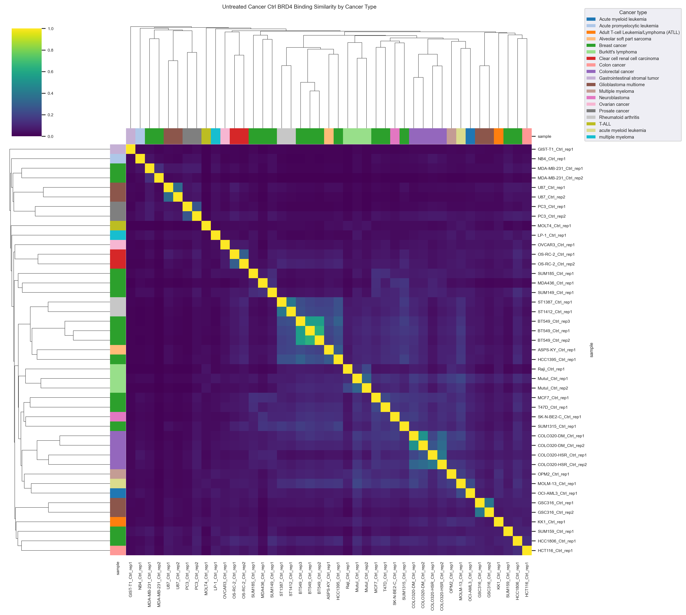
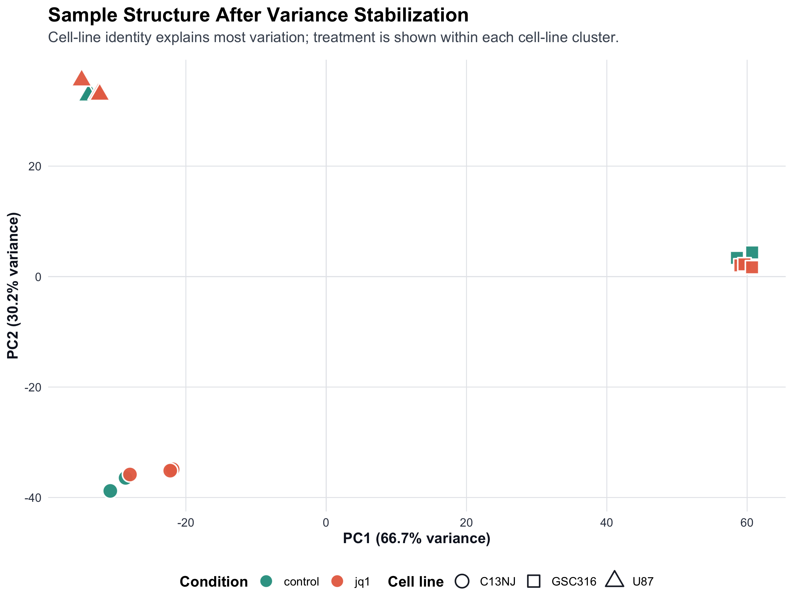
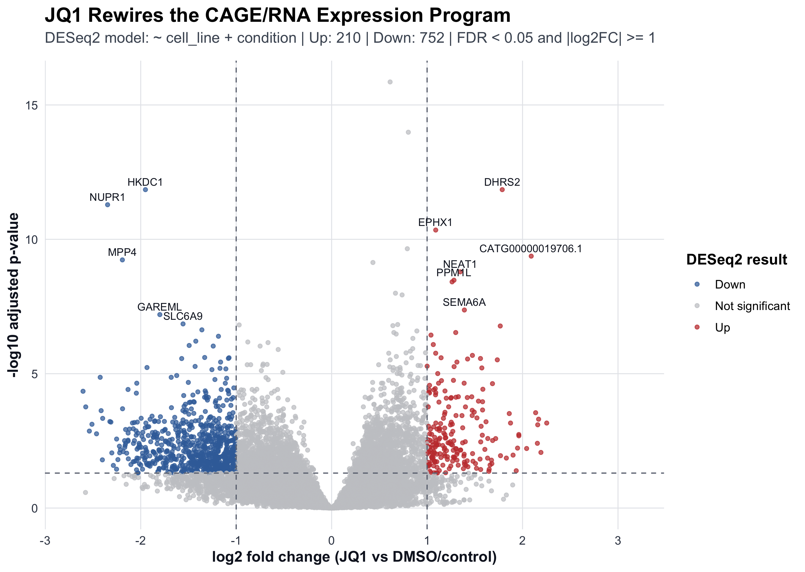
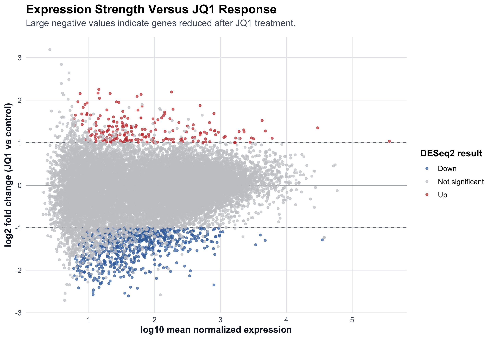
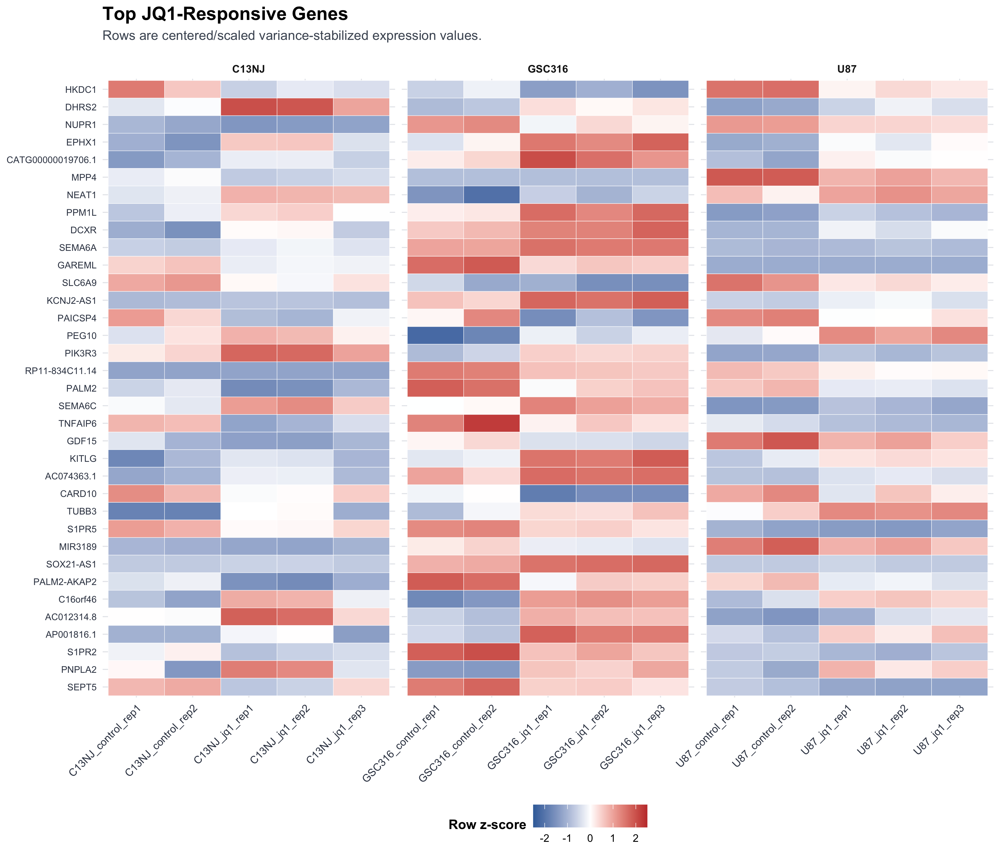
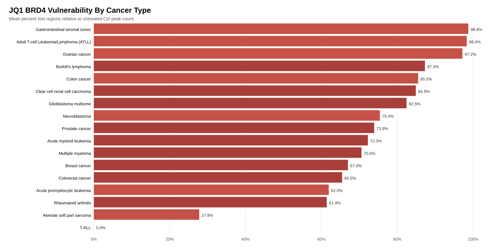
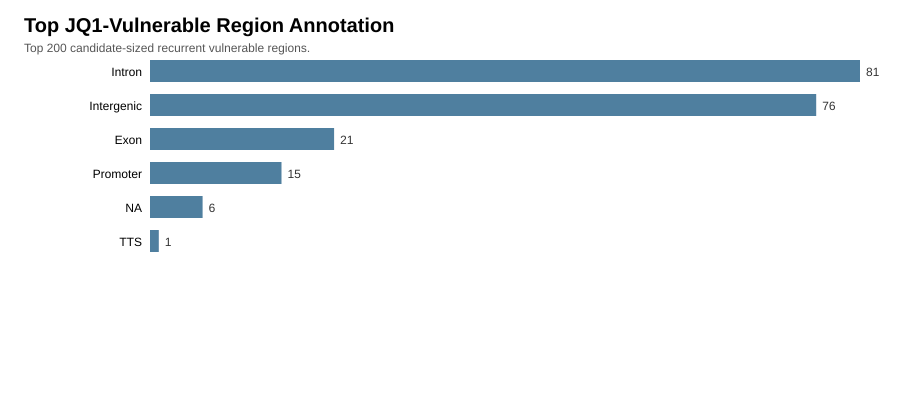
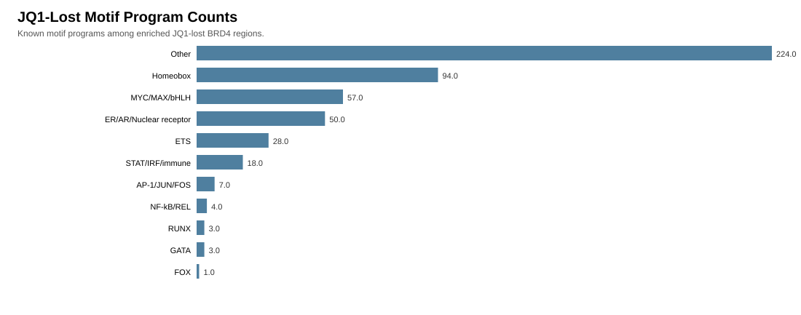
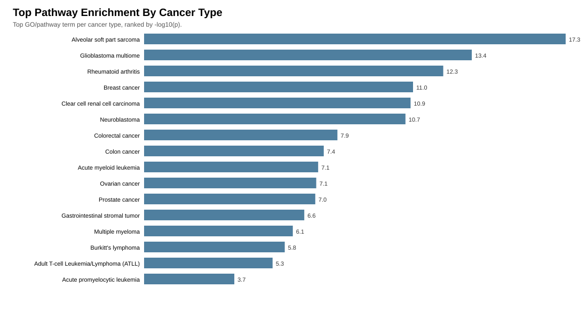

Data Audit
Built the initial inventory from the external drive: 163 metadata rows, 102 BRD4 rows, 100 narrowPeak files, and sample-level file status tables.
inventorymetadata
BRD4 JQ1 project results
A compact walkthrough of the project: data audit, consensus peak building, matched Ctrl/JQ1 comparison, hg19 harmonization, motif and pathway analysis, robustness checks, candidate prioritization, and the final candidate-region interpretation.
The final interpreted cohort uses all selected matched BRD4 Ctrl/JQ1 pairs, with middle-phase harmonized outputs pulled from the internship results folder.
Built the initial inventory from the external drive: 163 metadata rows, 102 BRD4 rows, 100 narrowPeak files, and sample-level file status tables.
Merged 81 included peak files into 410,275 consensus BRD4 regions with support annotations for downstream comparisons.
Standardized peak sets by group: 43 cancer-control samples, 1,285,397 cancer-control peak rows, and 368,651 cancer-control consensus regions.
Calculated per-sample JQ1 vulnerability from Ctrl peak counts and lost-peak counts, identifying high-loss contexts such as GIST-T1 and ATLL.
Built recurrent summit clusters and nearest-gene summaries, including 249,743 hg19 min-2-sample common summit regions and recurrent lost-peak genes.
Annotated promoter, gene-body, and intergenic context for common summits and JQ1-lost regions across hg18, hg19, and hg38 coordinate sets.
Harmonized JQ1-lost regions to hg19, assembled motif foreground/background sets, and summarized HOMER motif/pathway enrichment.
Integrated QC, baseline binding, JQ1 vulnerability, recurrent candidate regions, IGV targets, motifs, and pathways into a final story.
These are the extra results from the internship folder that complete the story between the initial audit and the final interpretation.
Untreated cancer-control samples were compared by pairwise Jaccard similarity. The strongest pairs were mostly same-cell-line or closely related replicate pairs.

Sample-level vulnerability ranked Ctrl peak burden against peaks lost after JQ1 treatment.
| Sample | Cancer type | Ctrl peaks | Lost peaks | % lost |
|---|---|---|---|---|
| GIST-T1 rep1 | Gastrointestinal stromal tumor | 4,869 | 4,809 | 98.77 |
| KK1 rep1 | Adult T-cell Leukemia/Lymphoma (ATLL) | 10,400 | 10,229 | 98.36 |
| MDA-MB-231 rep1 | Breast cancer | 5,575 | 5,360 | 96.14 |
| HCT116 rep1 | Colon cancer | 15,126 | 12,938 | 85.53 |
| LP-1 rep1 | Multiple myeloma | 8,794 | 7,329 | 83.34 |
Nearest-gene summaries highlighted recurrent genes across samples, led by RAD51B, ZMYND8, KCNMA1, NCOR2, and BICRAL.
| Gene | Samples | Peak-gene pairs |
|---|---|---|
| RAD51B | 42 | 982 |
| ZMYND8 | 42 | 242 |
| KCNMA1 | 41 | 669 |
| NCOR2 | 41 | 377 |
| BICRAL | 41 | 114 |
JQ1-lost hg19 regions were mostly gene-body or intergenic, with a smaller promoter fraction.
| Peak set | Promoter | Gene body | Intergenic | Total |
|---|---|---|---|---|
| JQ1-lost hg19 | 6.63% | 42.43% | 50.94% | 647,028 |
| Common summits hg19 min2 | 4.44% | 32.35% | 63.22% | 253,040 |
| Ctrl-only common hg19 | 6.27% | 46.01% | 47.72% | 37,565 |
The strongest signals are uneven across cancers: baseline BRD4 burden and JQ1 loss do not rank the same disease contexts.
Neuroblastoma, alveolar soft part sarcoma, breast cancer, Burkitt's lymphoma, and acute myeloid leukemia had among the strongest untreated BRD4 peak burdens. Breast cancer also contributed the largest multi-sample cohort and the largest cancer-specific consensus-region count.
| Cancer type | Ctrl samples | Median ctrl peaks | Cancer-specific regions |
|---|---|---|---|
| Neuroblastoma | 1 | 96,287 | 22,208 |
| Alveolar soft part sarcoma | 1 | 76,030 | 16,611 |
| Rheumatoid arthritis | 2 | 55,568 | 17,956 |
| Breast cancer | 14 | 40,230 | 120,078 |
| Burkitt's lymphoma | 3 | 29,371 | 27,191 |
Gastrointestinal stromal tumor, ATLL, ovarian cancer, Burkitt's lymphoma, and colon cancer showed the highest mean percent lost compared with untreated BRD4 peak counts.
| Cancer type | Pairs | Mean % lost | Total lost regions |
|---|---|---|---|
| Gastrointestinal stromal tumor | 1 | 98.77 | 4,809 |
| Adult T-cell Leukemia/Lymphoma (ATLL) | 1 | 98.36 | 10,229 |
| Ovarian cancer | 1 | 97.21 | 15,084 |
| Burkitt's lymphoma | 3 | 87.33 | 79,998 |
| Colon cancer | 1 | 85.53 | 12,938 |
Twelve follow-up analyses test robustness, explain heterogeneity, and turn the region-level outputs into interpretable candidate priorities and cancer-process hypotheses.
9 repeated cell-line/model groups had multiple matched Ctrl/JQ1 pairs. U87 and OS-RC-2 were highly consistent; MDA-MB-231, PC3, and COLO320-HSR were variable.
Untreated BRD4 peak burden did not positively predict proportional JQ1 loss. Pair-level Pearson was -0.4125, and Spearman was -0.4629.
Among the top 200 candidates, 129 were distal enhancer-like by annotation/TSS-distance proxy and 33 were promoter-proximal.
Most candidate-sized vulnerable regions were cancer-type-specific: 336,437 of 422,757. A small pan-cancer core contained 556 regions.
22 matched pairs were flagged. MOLT4 and ASPS-KY were the clearest resistant/retained-binding examples; SUM159, U87, GIST-T1, KK1, OVCAR3, MDA-MB-231, and MutuI were strong sensitive examples.
The composite candidate score prioritized E2F3, TARBP1, FBXL5, PAIP1, UBE2R2, IQGAP1, ZBTB7B, WEE1, VEGFA, and CA10.
High-sensitivity cancers showed strong ER/AR/nuclear receptor, Homeobox, MYC/MAX/bHLH, ETS, and related motif-program signals. Low-sensitivity contexts had sparse motif calls.
JQ1-lost regions had stronger motif occurrence than the BRD4 background for ER/AR/nuclear receptor, Other, Homeobox, and MYC/MAX/bHLH programs.
Direct BRD4 interactors overlapping motif-linked biology include MYC, AR, JUN, NR2F2, STAT1, STAT3, and ZNF711, with CDK9, CCNT1, MED1, EP300, BRD2, and BRD3 as supporting transcriptional cofactors.
The nuclear-receptor motif signal is broad but currently points more toward AR-like half-site biology than a clear ER-specific signal. BioGRID supports BRD4-AR and BRD4-ESR2 interactions, with no BRD4-ESR1 record in the filtered table.
Pan-cancer common BRD4/JQ1-vulnerable genes enrich for transcription/chromatin regulation, cell cycle, RNA processing, protein turnover, immune signaling, migration, and VEGFA-associated angiogenesis.
Glioblastoma BRD4/JQ1-lost target genes emphasize neural development, cell projection and invasion, PI3K-AKT/WNT/growth-factor signaling, hypoxia/vascular biology, p53/senescence, DNA damage response, and inflammation.
These are the newest biological interpretations: BRD4 interaction partners, nuclear-receptor context, top vulnerable-gene function, pan-cancer GO, and the glioblastoma-specific model.
Replicate robustness was assessed using percent BRD4 peak loss after JQ1 treatment. A repeated model was labeled high consistency when replicate spread was <=5 percentage points, moderate when spread was <=15 percentage points, and variable when spread was >15 percentage points. This separates true replicate consistency within the same model from broader cancer-type heterogeneity across different models.
| Model | Cancer type | Replicates | % lost values | Range | Robustness | Interpretation |
|---|---|---|---|---|---|---|
| U87 | Glioblastoma multiome | 2 | 99.90, 99.55 | 0.35 pp | High | Very robust JQ1-sensitive BRD4-loss response within this GBM model. |
| OS-RC-2 | Clear cell renal cell carcinoma | 2 | 87.25, 82.59 | 4.66 pp | High | Robust high BRD4-loss response across replicates. |
| GSC316 | Glioblastoma multiome | 2 | 67.84, 62.63 | 5.21 pp | Moderate | Moderately robust response; lower JQ1 sensitivity than U87 but internally consistent. |
| BT549 | Breast cancer | 3 | 66.48, 58.11, 60.74 | 8.37 pp | Moderate | Replicates support a moderate, reproducible JQ1-loss response. |
| MutuI | Burkitt's lymphoma | 2 | 95.52, 82.01 | 13.51 pp | Moderate | Consistently high response, but with noticeable replicate spread. |
| COLO320-DM | Colorectal cancer | 2 | 75.24, 60.68 | 14.56 pp | Moderate | Moderate reproducibility; close to the variability cutoff. |
| PC3 | Prostate cancer | 2 | 66.31, 81.57 | 15.26 pp | Variable, borderline | Just above the moderate cutoff; should be interpreted cautiously. |
| COLO320-HSR | Colorectal cancer | 2 | 54.89, 71.14 | 16.25 pp | Variable | Replicates show meaningful spread, suggesting model-level variability. |
| MDA-MB-231 | Breast cancer | 2 | 96.14, 65.71 | 30.43 pp | Variable | Least robust repeated model; strong replicate heterogeneity. |
| Cancer type | Matched pairs | Models represented | % lost range | Label | Interpretation |
|---|---|---|---|---|---|
| Clear cell renal cell carcinoma | 2 | OS-RC-2 | 4.66 pp | High | Robust, but based on one replicated model. |
| Burkitt's lymphoma | 3 | MutuI, Raji | 13.51 pp | Moderate | Fairly consistent high JQ1 loss across available pairs. |
| Prostate cancer | 2 | PC3 | 15.26 pp | Variable, borderline | Slightly above the moderate cutoff; interpret as near-moderate but not fully robust. |
| Colorectal cancer | 4 | COLO320-DM, COLO320-HSR | 20.35 pp | Variable | Different colorectal models show response heterogeneity. |
| Multiple myeloma | 2 | LP-1, OPM2 | 25.53 pp | Variable | Response differs across available myeloma models. |
| Acute myeloid leukemia | 2 | MOLM-13, OCI-AML3 | 37.23 pp | Variable | Large model-to-model difference in JQ1-associated BRD4 loss. |
| Glioblastoma multiome | 4 | GSC316, U87 | 37.27 pp | Variable | Each GBM model is internally robust/moderate, but U87 and GSC316 differ strongly from each other. |
| Breast cancer | 14 | 11 models | 56.94 pp | Variable | Strong cancer-type heterogeneity across breast cancer models. |
| Rheumatoid arthritis | 2 | ST1387, ST1412 | 16.37 pp | Variable | Slightly above the moderate cutoff, suggesting non-uniform response. |
| Cancer type | Model | % lost | Replicate interpretation |
|---|---|---|---|
| ATLL | KK1 | 98.36 | Strong response, but only one matched pair; replicate robustness cannot be assessed. |
| Gastrointestinal stromal tumor | GIST-T1 | 98.77 | Strong response, but only one matched pair. |
| Ovarian cancer | OVCAR3 | 97.21 | Strong response, but only one matched pair. |
| Colon cancer | HCT116 | 85.53 | High response, but no replicate support. |
| Neuroblastoma | SK-N-BE2-C | 75.44 | Moderate-high response, but no replicate support. |
| Acute promyelocytic leukemia | NB4 | 61.96 | Moderate response, but no replicate support. |
| Alveolar soft part sarcoma | ASPS-KY | 27.79 | Low response, but no replicate support. |
| T-ALL | MOLT4 | 0.00 | Retained-binding/resistant example, but no replicate support. |
BioGRID interaction evidence connects BRD4 to motif-linked regulators including MYC, AR, JUN, NR2F2, STAT1, STAT3, and ZNF711. Functionally, these point toward oncogenic transcription, nuclear-receptor signaling, AP-1/inflammatory response, STAT cytokine signaling, and zinc-finger regulatory programs. Supporting BRD4-associated cofactors such as CDK9, CCNT1, MED1, EP300, BRD2, and BRD3 reinforce a transcriptional elongation/enhancer-control model.
| BRD4 interactor | Motif/program link | Main function | Tumor interpretation |
|---|---|---|---|
| MYC | MYC/MAX/bHLH | Growth, metabolism, proliferation, and cell-cycle transcription | Supports the idea that BRD4 helps maintain oncogenic growth and cell-cycle programs. |
| AR | AR-like nuclear receptor half-site | Androgen receptor-dependent transcription | Links BRD4 to a nuclear-receptor-like program with AR support, especially where AR-like motifs are enriched. |
| NR2F2 | COUP-TF / nuclear receptor motif | Developmental and nuclear receptor transcriptional regulation | May contribute to cell identity, differentiation state, and tumor plasticity. |
| JUN | AP-1 motif program | Stress-response, inflammatory, proliferation, and migration signaling | Suggests BRD4 may cooperate with AP-1 programs that support tumor signaling and invasion. |
| STAT1 / STAT3 | STAT motif programs | Cytokine, immune, inflammatory, and survival signaling | STAT3 is especially relevant to tumor survival, inflammatory signaling, and microenvironment communication. |
| ZNF711 | Zinc-finger motif | Transcriptional regulation | Supports a zinc-finger regulatory link, although the tumor mechanism is less defined. |
| CDK9 / CCNT1 | Transcription elongation support | P-TEFb machinery that releases paused RNA polymerase II | Explains how BRD4 can promote active transcription at vulnerable tumor programs. |
| MED1 / EP300 | Enhancer and acetylated-chromatin support | Mediator coactivation and histone acetylation | Connects BRD4 to enhancer/super-enhancer activity and chromatin activation. |
| BRD2 / BRD3 | BET-family chromatin regulation | Related bromodomain proteins that read acetylated chromatin | Suggests BRD4 may act within a broader BET-family chromatin-regulatory network. |
The motif label ER/AR/nuclear receptor should be interpreted as a broad nuclear-receptor-like program. The strongest evidence supports AR-like half-site enrichment and direct BRD4-AR interaction evidence. ER-specific ERE/ERa/ERb motifs are not strong top signals in the current motif outputs, so the safest wording is that JQ1-lost BRD4 regions carry a broad nuclear-receptor-like signal with AR-like support, but not a clear ER-specific signature.
| Interpretation layer | Main processes | Cancer relevance |
|---|---|---|
| Top vulnerable genes | E2F3 cell cycle, WEE1 checkpoint control, VEGFA angiogenesis, IQGAP1/Rho-like signaling, KAT5 chromatin acetylation, SRPK2 RNA splicing/signaling | Supports proliferation, vascular growth, chromatin regulation, RNA processing, and survival signaling as BRD4/JQ1-vulnerable tumor functions. |
| Pan-cancer common GO | Transcription/chromatin, cell cycle, RNA processing/translation, ubiquitin-proteasome pathways, immune/inflammatory activation, adhesion/migration, VEGFA-associated vascular signaling | Suggests BRD4 maintains shared tumor programs needed for proliferation, stress tolerance, plasticity, and microenvironment communication. |
| Glioblastoma GO | Neural development, cell projection/axon guidance, invasion/adhesion, PI3K-AKT/WNT/growth-factor signaling, hypoxia/vascular biology, DNA damage response, inflammation | Supports a GBM model where BRD4 helps maintain neural-like plasticity, diffuse invasion, therapy-stress tolerance, and aggressive tumor expansion. |
| Top vulnerable gene(s) | Process/function | Why it matters for tumors |
|---|---|---|
| E2F3 | Cell-cycle and proliferation transcription factor | Can support tumor-cell division by activating genes needed for cell-cycle progression. |
| WEE1 | G2/M checkpoint kinase | Helps tumor cells tolerate replication stress and DNA damage before entering mitosis. |
| VEGFA | Angiogenesis and vascular signaling | Promotes new blood-vessel formation, helping tumors obtain oxygen and nutrients. |
| KAT5 | Chromatin acetylation and DNA damage response | Connects BRD4 vulnerability to chromatin regulation, transcriptional plasticity, and repair signaling. |
| TARBP1 / PAIP1 | RNA binding, translation, and RNA/protein production | May support the high RNA and protein production demands of growing tumor cells. |
| SRPK2 / SCAF11 | RNA splicing and RNA processing | Suggests BRD4-vulnerable regions may influence transcript processing and tumor-cell regulatory flexibility. |
| UBE2R2 / FBXL5 | Ubiquitin/protein turnover and iron homeostasis | Protein degradation and iron balance can affect stress adaptation and tumor-cell fitness. |
| IQGAP1 / EPS8L3 / MYL12B | Signaling, cytoskeleton, and migration | Can support cell movement, invasion, and cytoskeletal remodeling. |
| ZBTB7B / PRF1 | Immune-lineage or immune/cytotoxic context | May reflect immune-related regulatory programs or tumor-microenvironment-linked biology. |
| GBM enriched process | Best enriched term | Evidence strength | Why it matters in glioblastoma |
|---|---|---|---|
| Invasion, adhesion, and migration | Cell morphogenesis | p=2.28e-09; 305 target genes | Suggests BRD4 may support cell-shape changes, adhesion, and diffuse brain infiltration. |
| Neural development and stem-like plasticity | Nervous system development | p=8.80e-09; 844 target genes | GBM cells often reuse neural developmental states to maintain plasticity and therapy tolerance. |
| Growth-factor and oncogenic signaling | Pathways in cancer | p=5.44e-06; 180 target genes | Includes PI3K-AKT, WNT, EGFR/PDGF-related signaling that can support survival and treatment resistance. |
| Hypoxia and vascular biology | Cellular response to hypoxia | p=5.80e-05; 68 target genes | Fits glioblastoma because GBM is highly vascular and often depends on hypoxia/angiogenesis programs. |
| Cell cycle, senescence, and p53 control | Cell population proliferation | p=1.09e-04; 291 target genes | Supports proliferative growth and checkpoint adaptation in GBM cells. |
| DNA damage and stress response | DNA Damage Response (ATM dependent) | p=2.47e-04; 60 target genes | May help GBM cells tolerate replication stress, radiation-associated damage, and other therapies. |
| Immune and inflammatory signaling | DAP12 interactions | p=5.00e-04; 153 target genes | Suggests BRD4 may influence inflammatory signaling and tumor-microenvironment communication. |
| Chromatin and transcriptional regulation | Regulation of miRNA transcription | p=6.22e-04; 40 target genes | Matches BRD4's role as a chromatin reader supporting enhancer-driven oncogenic transcription. |
| GBM candidate | Process/function | Interpretation |
|---|---|---|
| CDCP1 | Adhesion, invasion, survival signaling | Strong GBM-relevant candidate because adhesion and survival signaling can support invasive tumor behavior. |
| PREX1 | PI3K-RAC signaling and migration | Connects BRD4-vulnerable regions to motility, invasion, and survival signaling. |
| MEF2C / NFIB | Neural and glial transcriptional regulation | Supports the model that BRD4 maintains neural-like GBM cell-state plasticity. |
| SPIDR / RAD51B | Homologous recombination DNA repair | Links GBM vulnerability to DNA repair capacity and potential tolerance of radiation or replication stress. |
| TRIO / MICAL2 | Rho/Rac and actin remodeling | Fits GBM invasion because cytoskeletal remodeling controls migration and brain-tissue infiltration. |
BRD4 appears to support tumor growth by maintaining enhancer-linked transcriptional programs for proliferation, cell-cycle control, angiogenesis, RNA/protein regulation, and stress tolerance. In glioblastoma specifically, the signal shifts toward neural-like plasticity, cell projection and invasion, growth-factor signaling, hypoxia/vascular biology, DNA damage response, and inflammatory microenvironment signaling.
Pan-cancer shared vulnerable regions ranked by the number of cancer types in which the same hg19 region loses BRD4 after JQ1 treatment.
| Rank | Region | Nearest gene | Cancer types | Samples | Lost peak records |
|---|---|---|---|---|---|
| 1 | chr6:20400791-20404966 | E2F3 | 14 | 25 | 54 |
| 2 | chr5:43555258-43558197 | PAIP1 | 14 | 24 | 29 |
| 3 | chr4:15653249-15658095 | FBXL5 | 13 | 32 | 39 |
| 4 | chr17:50147890-50152657 | CA10 | 13 | 27 | 45 |
| 5 | chr7:104942506-104947156 | SRPK2 | 13 | 18 | 28 |
| 6 | chr1:234610007-234619582 | TARBP1 | 12 | 35 | 70 |
| 7 | chr17:81866943-81874073 | RPL23AP87 | 12 | 30 | 58 |
| 8 | chr1:154970272-154977126 | ZBTB7B | 12 | 28 | 66 |
| 9 | chr10:72317920-72326038 | PRF1 | 12 | 28 | 59 |
| 10 | chr16:2152232-2157504 | MIR6511B2 | 12 | 27 | 50 |
Full ranked table: top pan-cancer shared JQ1-lost regions.
Candidate loci concentrate near genes with plausible cancer biology, regulatory, cell-cycle, chromatin, RNA-processing, or signaling relevance.
| Rank | Nearest gene | Region | Samples | Cancer types |
|---|---|---|---|---|
| 1 | E2F3 | chr6:20400791-20404966 | 25 | 14 |
| 2 | PAIP1 | chr5:43555258-43558197 | 24 | 14 |
| 3 | FBXL5 | chr4:15653249-15658095 | 32 | 13 |
| 4 | CA10 | chr17:50147890-50152657 | 27 | 13 |
| 5 | SRPK2 | chr7:104942506-104947156 | 18 | 13 |
| 6 | TARBP1 | chr1:234610007-234619582 | 35 | 12 |
| 7 | UBE2R2 | chr9:33816641-33819035 | 27 | 12 |
| 8 | ZBTB7B | chr1:154970272-154977126 | 28 | 12 |
CAGE/RNA expression data from GSE178471 were analyzed with DESeq2 to test the JQ1 transcriptional response while accounting for cell-line identity.
The differential expression model was ~ cell_line + condition.
This controls for baseline differences between C13NJ, GSC316, and U87 before estimating the JQ1 effect.
| Cell line | Control | JQ1 | Role |
|---|---|---|---|
| C13NJ | 2 | 3 | Microglia / non-cancer reference model |
| GSC316 | 2 | 3 | Glioblastoma stem-cell model overlapping the ChIP-seq work |
| U87 | 2 | 3 | Glioblastoma cell-line model overlapping the ChIP-seq work |
JQ1 produces a broad transcriptional response, with many more genes reduced than increased. This supports the BRD4 inhibitor model: genes that depend on BRD4-associated regulatory activity are expected to lose expression after JQ1.
The PCA summarizes the strongest expression-pattern differences between samples.

The volcano plot shows effect size and statistical support for every tested gene.

The MA plot checks whether differential expression is concentrated in weakly expressed genes or spread across expression levels.

The heatmap shows expression patterns for the most significant JQ1-responsive genes.

The expression data show that JQ1 causes a strong transcriptional response after accounting for cell-line identity. The most useful integration step is to intersect genes downregulated after JQ1 with genes near BRD4 peaks lost after JQ1, prioritizing candidate direct BRD4/JQ1-sensitive targets.
These images are loaded directly from the final output folders, keeping the page tied to the generated analysis files.
Percent lost compared with untreated BRD4 peak counts.

Repeated model pairs show which JQ1-response estimates are robust and which need heterogeneity caveats.

Baseline BRD4 peak count does not simply explain proportional JQ1 loss.

Genomic annotation categories for recurrent JQ1-vulnerable regions.

Most top candidates fall in distal intronic/intergenic enhancer-like contexts by annotation and TSS distance.

A small pan-cancer core sits inside a much larger cancer-type-specific vulnerable-region landscape.

Flagged pairs highlight unusually sensitive, resistant, baseline-discordant, and replicate-variable cases.

Composite scoring ranks candidate genes and regions using recurrence, annotation, sharing, gene evidence, and IGV shortlist status.

Global motif-program counts from JQ1-lost regions.

High-sensitivity contexts have stronger detected motif-program signals than low-sensitivity contexts in the current summaries.

Motif occurrence is compared between the JQ1-lost foreground and the BRD4 retained/background comparison set.

Strongest pathway enrichment terms by cancer type.

BRD4 binding landscapes differ substantially across cancer types, and JQ1 response is not uniform. The added analyses strengthen that conclusion: baseline peak burden does not simply predict response, most vulnerable regions are cancer-type-specific, top candidates can be prioritized around E2F3/TARBP1/FBXL5-like loci, sensitive contexts carry richer detected regulatory motif programs, and glioblastoma-specific targets highlight neural-like plasticity, invasion, survival signaling, DNA damage response, hypoxia/vascular biology, and inflammation.
{kind=link}
{kind=link}
{kind=link}
{kind=link}
{kind=link}
{kind=link}
{kind=link}
{kind=link}